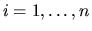
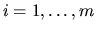
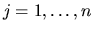

Each two-dimensional array argument is immediately followed in the argument list by its leading dimension, whose name has the form LD<array-name>. For example:
|
It should be assumed, unless stated otherwise, that vectors and matrices are stored in one- and two-dimensional arrays in the conventional manner. That is, if an array X of dimension (N) holds a vector x, then X(i) holds xi for . If a two-dimensional array A of dimension (LDA,N) holds an m-by-n matrix A, then A(i,j) holds aij for  and  (LDA must be at least m). See Section 5.3 for more about storage of matrices.
Note that array arguments are usually declared in the software as assumed-size arrays (last dimension *), for example:
REAL A( LDA, * )
although the documentation gives the dimensions as (LDA,N). The latter
form is more informative since it specifies the required minimum value of
the last dimension. However
an assumed-size array declaration has been used in the software,
in order to overcome some
limitations in the Fortran 77 standard. In particular it allows the
routine to be called when the relevant dimension (N, in this case) is zero.
However actual array dimensions in the calling program must be at
least 1 (LDA in this example).